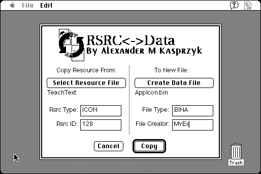

Download
Rsrc2Data.zip (41K) Rsrc<->Data 1.0 repackaged into a zipped hfs disk image and checksum file. The disk image can be mounted with Mini vMac.
Rsrc2Data.sit.hqx (53K) Rsrc<->Data 1.0 in the original format.
copyright: Alexander Kasprzyk
mod date: Jun 21, 1996
license: Freeware
from url :
Programming Utilities for Mac OS
Can "either copy a resource from a file's resource fork into the data fork of a new file, or you can do the opposite and copy a file's data fork into a new file's resource fork." It "requires System 7.0 or greater".

If you find these downloads useful, please consider helping the Gryphel Project, which hosts them.
Here are the md5 checksums for the downloads, signed with Gryphel Key 5:
--------- GRY SIGNED TEXT --------- 95ad6e1c314d756d7c4f0943ab8446e7 Rsrc2Data.zip b1a24e027dc732bf1949b1ae0c33add1 Rsrc2Data.sit.hqx ------- BEGIN GRY SIGNATURE ------- Gry/4Xa8CFcUzxdN/Iu0JLFPh4iO1G42F3cFCjjTkJyU8rC6O/99KVFVITunGsvE yz9rhtSzeLh5ZeWG9SVHolNzx37u047XbR2+N1cDr684SXJbFsnRfH2oC7Qq6B/V dc3abE44gtrnkZb2PB38i8/fVVpvy5hxd1n0BCX3yaq6mTQjWOYc6AABQv+i0SNs -------- END GRY SIGNATURE --------